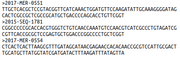
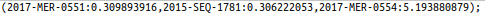
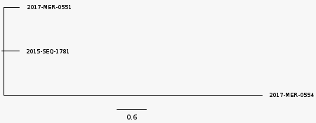
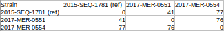
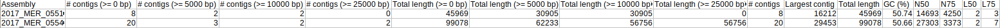
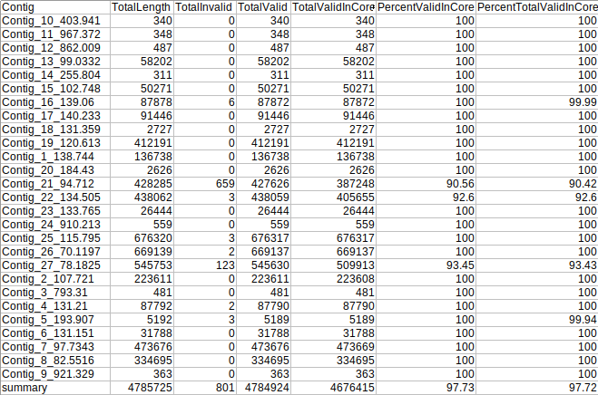
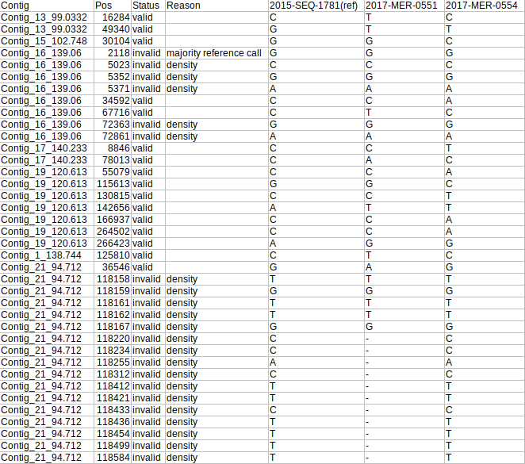
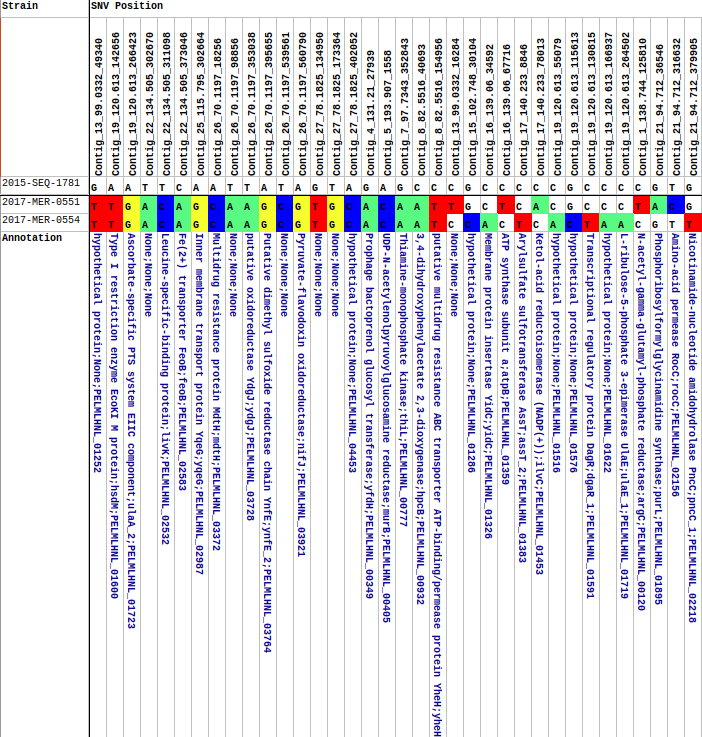
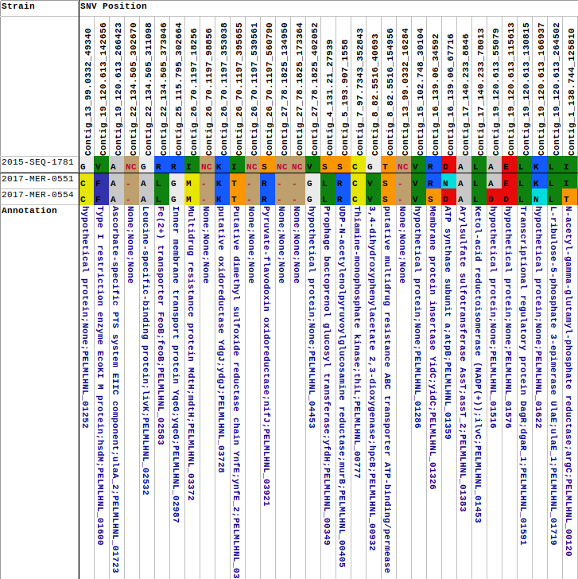

Required Arguments
-s SEQUENCE_PATH, --sequence_path SEQUENCE_PATH
Path to folder containing sequencing reads
-r REFERENCE_PATH, --reference_path REFERENCE_PATH
Provide the location of the folder containing the reference genome FASTA
You can supply absolute or relative paths. Therefore, from your current working directory you could process
sequences in the fastq folder against the FASTA reference in the ref folder with either of the following two commands:
cowsnphr -s fastq -r ref
cowsnphr -s /path/to/fastq -r /path/to/ref
Optional Arguments
COWSNPhR has a few optional arguments that allow you to modify its other parameters. Optional arguments are:
-h, --help show this help message and exit
-v, --version show program's version number and exit
-t THREADS, --threads THREADS
Number of threads. Default is the number of cores in the system - 1
-d, --debug Enable debugging-level messages to be printed to the terminal
-w WORKING_PATH, --working_path WORKING_PATH
If you are running these analyses anywhere other than your $HOME directory, you will
need to provide the path to the drive e.g. /mnt/nas. This is necessary for the docker
calls to deepvariant. An additional volume will be mounted in the docker container:
e.g. -v /mnt/nas:/mnt/nas
-m MASKFILE, --maskfile MASKFILE
Supply a BED-formatted file with regions to mask. Generally, the format is: chrom
chromStart chromEnd where chrom is the name of the reference chromosome;
chromStart is the Start position of the feature in standard chromosomal coordinates
(i.e. first base is 0); chromEnd is the End position of the feature in
standard chromosomal coordinates
-g, --gpu Enable this flag if your workstation has a GPU compatible with deepvariant.
The program will use the deepvariant-gpu Docker image instead of the regular
deepvariant image. Note that since I do not have a setup with a GPU, this is COMPLETELY UNTESTED!
Example Outputs
Running the following command (note that the debug option has been enabled):
cowsnphr.py -s /Bioinformatics/COWSNPhR/fastq -r /Bioinformatics/COWSNPhR/ref -d
with two paired FASTQ samples (2017-MER-0551, 2017-MER-0554) against FASTA reference 2015-SEQ-1781
If COWSNPhR is properly installed, you should see something similar to the following appear on your terminal:
2020-09-17 19:40:55 Welcome to COWSNPhR version 0.0.30
2020-09-17 19:40:55 Supplied sequence path:
/Bioinformatics/COWSNPhR/fastq
2020-09-17 19:40:55 Supplied reference path:
/Bioinformatics/COWSNPhR/ref
2020-09-17 19:40:55 Locating FASTQ files, creating strain-specific working directories and symlinks to files
2020-09-17 19:40:55 FASTQ files:
/Bioinformatics/COWSNPhR/fastq/2017-MER-0551_S1_L001_R1_001.fastq.gz
/Bioinformatics/COWSNPhR/fastq/2017-MER-0551_S1_L001_R2_001.fastq.gz
/Bioinformatics/COWSNPhR/fastq/2017-MER-0554_S1_L001_R1_001.fastq.gz
/Bioinformatics/COWSNPhR/fastq/2017-MER-0554_S1_L001_R2_001.fastq.gz
2020-09-17 19:40:55 Extracting paths to reference genomes
2020-09-17 19:40:55 Running bowtie2 build
2020-09-17 19:40:58 Creating .fai index file of 2015-SEQ-1781
2020-09-17 19:40:58 Running bowtie2 reference mapping
2020-09-17 19:58:25 Indexing sorted BAM files
2020-09-17 19:58:30 Extracting unmapped reads
2020-09-17 19:59:03 Attempting to assemble unmapped reads with SKESA
2020-09-17 20:02:11 Running Quast on SKESA assemblies
2020-09-17 20:02:23 Preparing files for SNP calling with deepvariant make_examples
2020-09-17 20:35:56 Calling variants with deepvariant call_variants
2020-09-17 20:38:28 Creating VCF files with deepvariant postprocess_variants
2020-09-17 20:38:36 Copying gVCF files to common folder
2020-09-17 20:38:36 Parsing gVCF files
2020-09-17 20:38:37 Loading SNP positions
2020-09-17 20:38:37 Performing SNP density filtering
2020-09-17 20:38:37 Masking low complexity and repeat regions in reference genomes
2020-09-17 20:38:47 Extracting coordinates to mask
2020-09-17 20:38:47 Filtering SNPs in masked regions
2020-09-17 20:38:47 Loading SNP sequences
2020-09-17 20:38:47 Removing identical SNP positions from group
2020-09-17 20:38:47 Creating multi-FASTA files of core SNPs
2020-09-17 20:38:47 Summarising SNPs
2020-09-17 20:39:02 Creating phylogenetic trees with FastTree
2020-09-17 20:39:02 Parsing strain order from phylogenetic trees
2020-09-17 20:39:02 Copying phylogenetic trees to /Bioinformatics/COWSNPhR/fastq/tree_files
2020-09-17 20:39:02 Creating GenBank file for 2015-SEQ-1781 as required
2020-09-17 20:44:15 Loading GenBank files for closest reference genomes
2020-09-17 20:44:17 Annotating SNPs
2020-09-17 20:44:17 Counting prevalence of SNPs
2020-09-17 20:44:17 Determining amino acid sequence at SNP locations
2020-09-17 20:44:17 Creating SNP matrix
2020-09-17 20:44:17 Ranking SNPs based on prevalence
2020-09-17 20:44:17 Sorting SNPs based on order of strains in phylogenetic trees
2020-09-17 20:44:17 Creating summary tables
2020-09-17 20:44:18 Analyses Complete!
Interpreting COWSNPhR Results
COWSNPhR produces several output files:
Core SNV alignment:
alignment.fasta in the fastq/alignments folder
This is a multi-FASTA of the extracted core SNVs, and is used by fasttree to generate phylogenetic trees

Phylogenetic tree:
best_tree.tre in the fastq/alignments folder
An approximately-maximum-likelihood phylogenetic tree generated by fasttree from the core SNV alignment

when viewed with figtree:

SNV Matrix
species_group_snv_matrix.tsv in fastq/snv_matrix
A matrix displaying the number of SNVs observed between each sample in the analysis

Assembly report
assembly_report.tsv in fastq/summary_tables folder
Quast-generated report of the raw statistics of contigs created from unmapped reads

Contig Summary
contig_summary.tsv in fastq/summary_tables folder
Reference genome per-contig summary.
Contig- name of reference contigTotalLength- length of contigTotalInvalid- number of positions determined to be invalid (due to low quality, high density, user-provided mask, insufficient coverage, or low allele fraction)TotalValid- number of valid positions (all positions that were not determined to be invalid)TotalValidInCore- number of valid positions in the calculated core genome (composed of genome sequence that is present in all samples)PercentValidInCore-TotalValidInCore / TotalValid * 100PercentTotalValidInCore-TotalValidInCore / TotalLength * 100
Note: this is a summary row at the bottom of the file

SNV Summary
snv_summary.tsv in fastq/summary_tables folder
Summary of every SNV position
Contig- name of reference contigPos- SNV position in reference contigStatus- position is valid/invalidReason- the reason(s) a position is invalid2015-SEQ-1781(ref)- the sequence of the position in the reference genome2017-MER-0551- the sequence of the position in the query genome2017-MER-0554- the sequence of the position in the query genome

Nucleotide Summary Table
nt_snv_sorted_table.xlsx in fastq/summary_tables
Summary of the sorted nucleotide SNVs
Strain- name of the strain. The reference strain is the top strainSNV Position- Contig name_position, reference sequence: colour-coded strain sequences, annotation of the region of the reference genome in which the SNV is located

Amino Acid Summary Table
aa_snv_sorted_table.xlsx in fastq/summary_tables
Summary of the translated sorted SNVs
Strain- name of the strain. The reference strain is the top strainSNV Position- Contig name_position, colour-coded reference sequence (NC indicates that the position is not in a coding region): colour-coded strain sequences, annotation of the region of the reference genome in which the SNV is located
